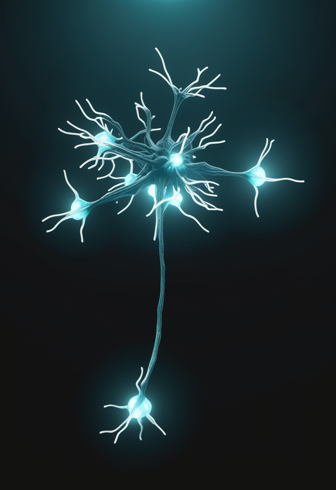

DRCのエボラは対応開始から半年を超えても制御できず、子どもの被害が深刻に。米国の麻疹排除喪失は、ユタ州の流行が決め手だったと判明。
コンゴ民主共和国(DRC)のエボラ(ブンディブギョ株)流行は、2026年5月中旬の宣言から半年を超えても制御できていない。AP通信(Washington Post・WSLS経由)は11/15、確定例が1万1,000例を超え、政府データでほぼ半数が死亡したと報じた。新華社は同日、確定11,254例・死者5,505人と伝えている(集計日は記事から確認できず)。流行は8州・67の保健区域に広がり、イトゥリ州と北キブ州に集中する。UNICEFによると、11/4までの死者のうち35%が子どもで、5歳未満は死者全体の21%を占め、感染した5歳未満の子どものうち72%が死亡した。アフリカCDCは先月、7億ドルを超えるエボラ支援金の使途が分からなくなっていると懸念を示し、国境なき医師団(MSF)は『動員された資源と、患者や最前線の医療従事者に実際に届くものとの間に、気がかりな断絶がある』と述べた。イスラム国系とされる武装勢力ADFによる医療従事者・医療施設への攻撃も、イトゥリ州と北キブ州での対応を一段と難しくしている。ブンディブギョ株には承認されたワクチンや治療薬がない。
オーストラリアの保健相マーク・バトラー氏は、SMAの遺伝子治療ゾルゲンスマ(オナセムノゲン・アベパルボベク)の公的医薬品給付制度(PBS)の対象を、これまでの『生後9か月未満』から『体重21kgまでの子ども』に広げると発表した。専門家委員会(PBAC)が2025年11月、9か月を超えた子どもでも有効性・安全性は同程度とみて対象拡大を勧告していた。発効日や具体的な対象人数は発表資料からは確認できていない。年齢でなく体重で線引きすることで、より多くの子どもが1回の点滴で済む遺伝子治療に手が届くことになる。
FDAは、ゾルゲンスマとその髄注製剤Itvismaについて、遺伝子の運び役(ベクター)ががん関連遺伝子GLI1の近くに入り込む『挿入変異によるがん化』が市販後報告で確認されたとして調査を続けている。11/15時点で新たな規制措置は発表されていないが、FDAは承認された使い方では利益がリスクを上回るとの立場を維持している。米国のCure SMA・MDAは11/5、英国のMuscular Dystrophy UKは11/6、それぞれ患者・家族向けに現状を説明する声明を出した。
ゾルゲンスマは対象年齢の線引きを広げ、より多くの子どもに手が届くようになった。一方でFDAは、遺伝子治療につきまとう挿入変異のリスクを原因遺伝子のレベルまで特定しつつある。治療の『届く範囲』が広がる速さと、長期安全性の確認の速さは、まだ揃っていない。
Synchronが発表した治験の一時停止について、STATが11/13、対象は血管内インプラント『Stentrode』の第2世代の試験だと報じた。経営陣は安全性の問題ではなく、信号を伝えるリード線の性能問題が原因で、FDAの指示ではなく自社判断だと説明している。同社は2026年中に承認に必要な大規模試験(ピボタル試験)へ進む計画を掲げていたため、リード線の設計・製造を社内に移して改良する今回の対応が、その日程にどう響くかが焦点になる。再開時期は未定。
中国工業情報化部(MIIT)が立項したBCI業界標準9項目には、侵襲型インプラントの無線通信に関する標準が含まれるとTech Timesが11/14に報じた。無線通信の安全性(セキュリティ)をどう定めるかは、案文がまだ公開されていないため分からない。中国は2026年1月に初のBCI医療機器の国家標準を施行しており、植え込み機器の通信規格という一歩細かい領域にも標準づくりが及んできた。
Neuralinkは10/1、植え込み参加者の累計使用時間が5万時間を超え、そのデータで学習したBCIの基盤モデル(多くの用途に使える大規模AIモデル)を発表したと伝えられている。10月にはブルームバーグが、評価額85億ドル(調達前)で約5億ドルの追加資金調達を計画していると報じた(ロイター経由)。11月に入ってからの新しい公式発表は確認できていない。電極の数を競う時代から、学習データの量と基盤モデルの性能を競う時代への移行を示す動きとして背景に留めておく。
Synchronは第2世代の試験の足を止め、中国は標準づくりの網を無線通信にまで広げた。Neuralinkはデータ量で勝負をかける。BCIの競争は『電極の数』から『周辺部品の信頼性とデータ』へ重心が移っている。
AP通信(Washington Post・WSLS経由)は11/15、DRCのエボラが対応開始から半年を超えても制御できていないと報じた。新華社は同日、確定11,254例・死者5,505人と伝えている(集計日は記事から確認できず)。流行は8州・67保健区域に広がり、イトゥリ州・北キブ州に集中する。UNICEFによると11/4までの死者の35%が子どもで、5歳未満は死者の21%を占め、感染した5歳未満の72%が死亡した。アフリカCDCは7億ドル超のエボラ支援金の使途不明を懸念し、MSFは資源と現場に届くものとの間の『気がかりな断絶』を指摘している。詳しくは本号の今日の一本を参照。
米国が麻疹の『排除国』の地位を失ったと11/13に最初に報じられた件について、NPRも11/14、国際保健当局が地位喪失を判断したと報じた。WSJの報道によると、700人超が感染したユタ州の流行が『同じ系統のウイルスが12か月以上途切れずに広がった』という判定基準を満たした決め手になったという。ホワイトハウスは取材に対し『大統領と保健福祉長官はワクチン接種を繰り返し呼びかけてきた』とコメントし、汎米保健機構(PAHO)と米CDCは取材に応じていない。PAHOの正式な声明文は本号の時点でも確認できていない。地位を取り戻すには、国内での連続した流行を少なくとも12か月断つ必要がある。
エボラと並行して、DRCではコレラの流行も続いている。WHOのテドロス事務局長は11月上旬、コンゴ川流域の感染が首都キンシャサまで広がるおそれがあると警告した。これを受け、キンシャサと対岸のブラザビル(コンゴ共和国)で合わせて200万人を対象にしたワクチン接種が始まった。全国の累計患者数は報道ごとに食い違いが大きいため、本号では掲載を見送る。参考値として、米国の鳥インフルエンザH5の人への確定例は、英国政府のまとめ(10/15時点、CDC値)で2024年以降72例。
エボラは半年という節目で『制御できていない』という評価が相次いだ。麻疹排除の喪失はユタ州の流行が決め手になったと分かり、コレラは首都キンシャサに迫る。感染症対策は、どれも一つの対策だけでは足りない局面にある。
中国科学院の空間応用工程・技術センターなどの研究チームが、中国宇宙ステーション『天宮』の実験棟『夢天』にある超低温原子実験装置で、ルビジウム87原子約2万個の雲を等価温度9.7ピコケルビン(誤差範囲7.0〜12.9)まで冷やしたと、11/6にScience誌で発表した。これまでの記録は落下塔実験の38ピコケルビン、NASAの国際宇宙ステーション実験の52ピコケルビンで、大きく更新した。地上では原子の雲を約0.05秒しか観察できないが、無重力を生かして7秒間追跡できたことが強み。『温度』は原子が広がる速さを表す値で、装置全体がその温度になったわけではない。
モデルナとメルクが患者ごとのがんの遺伝子変異に合わせて作る個別化mRNAワクチン『インティスメラン』の第3相試験(INTerpath-001)の論文が、NEJMに11/11掲載された。手術で切除したステージIIB〜IVの悪性黒色腫(メラノーマ)患者1,137人を対象に、免疫薬ペムブロリズマブとの併用群と単独群を比較した結果、24か月の無再発生存率は82.2%対70.0%で、再発か死亡のリスクを42%下げた(ハザード比0.58)。遠隔転移のない生存率は88.5%対80.2%。全生存期間のデータはまだ十分でなく、長期の効果は今後の追跡で分かる。結果は今年のESMO学会で先に発表されていた。
チリのベラ・ルービン天文台の観測データから、冥王星(太陽から平均約40天文単位)より遠い約46天文単位の軌道に、準惑星の候補『2026 ED138』が見つかったと10月下旬に発表された。直径の推定は約600〜1,500km(370〜930マイル)と幅があり、大きい方の推定なら既知の準惑星の中でも大きい部類になる。正式に準惑星と認められるには、赤外線観測などでさらに大きさと形を確かめる必要がある。認められれば、冥王星・ケレス・エリス・ハウメア・マケマケに続く6番目の準惑星となる。
宇宙では中国が原子をかつてない冷たさまで導き、医学ではmRNAワクチンが再発リスクを4割以上減らした。冥王星の外には6番目の準惑星候補も見つかり、量子・医学・天文のどこかで前進が続いている。
研究者のデイヴィー・デン氏とクレア・ワン氏は11/2、脳をまるごとコンピューター上に再現する全脳エミュレーションの研究には、脳活動の『予測』と『因果の仕組み』の両方を試す共通のベンチマークが必要だと論じ、4段階の評価レベルを提案した(査読前の論考)。意識について何が言えるかも併せて検討している。9月に発表されたNature Reviews Electrical Engineeringの論文は、脳のデジタルツインの精度はニューロンの数ではなく、元になる生体計測の解像度と網羅性で決まるという『計測で定義するエミュレーション尺度』を示していた。精度を測る共通の物差しづくりが、ようやく動き始めている。

脳の情報を守る権利『ニューロライツ』を、臨床で使われ始めたBCIの文脈で組み立て直す論文が、生命倫理誌Journal of Bioethical Inquiryに11/9掲載された(中国の統治のあり方に焦点を当てた内容)。米国では、神経データを法律で定義する州が少なくとも6州になったが、定義の内容はまだそろっていない。『脳を写す』技術の精度を測る物差しと、写したデータを守る法律は、どちらもまだ技術の広がりに追いついていない。
ニューヨーク大学のトーマス・スナイダー氏とジョージ・メイソン大学のハーゲン・クラウス氏が、ペルー北部ランバイェケ谷の複数の遺跡から出土した1,600人超の人骨を分析し、学術誌Frontiers in Environmental Archaeologyに発表した。紀元前1500年から西暦1500年までの約3,000年間にわたる骨で、頭部の損傷が25人、頭部以外の損傷(事故によるとみられる)が77人に見つかった。エルニーニョによる干ばつや洪水といった環境ストレスが競争や暴力を招いたという仮説を検証したが、統計的には環境ストレスと暴力・事故のどちらとの間にも有意な関連は見つからなかった。研究者らは、苦しい時期には海を別の食料源として頼っていた可能性があるとみており、スナイダー氏はアンデスのより長い歴史を踏まえ『6,000年にわたるエルニーニョへの創造的な適応』であり、広範な暴力はその中に含まれないと総括した。
英ボーンマス大学のポール・クラークソン氏らの研究チームが、イギリス・ケンブリッジシャー州のフェンズ地方にある集落跡の円形家屋の溝から見つかった、約1,700年前のカエルの骨8,000個超を分析し、学術誌Environmental Archaeologyに発表した。骨に切り傷が無く、人がカエルを殺した跡は見当たらないため、紀元前400年から西暦43年ごろにかけて『カエル崇拝』があったとする以前の説は弱まった。骨の損傷パターンを死因の分かっている動物の骨と比べ、前腕の骨の測定から多くが1歳になる前に死んでいたことも分かった。研究チームは、コミミズクやチュウヒといった猛禽類がカエルを食べ、骨を残したとみている。クラークソン氏はこれを『フクロウたちのカエルの祝宴』と表現した。湿地の水が引いてカエルの繁殖に適した環境ができ、放牧で開けた土地になったことで、猛禽類がカエルを見つけやすくなったという背景がある。
全脳エミュレーションには共通の物差しが必要だと説かれ、ニューロライツは臨床BCIの時代に合わせて再定義されている。3,000年前のペルーの人骨と1,700年前のカエルの骨は、暴力ではなく適応と自然の営みという、記録に残りにくい静かな事実を語る。
今号の軸は『半年という節目』だった。DRCのエボラは対応開始から半年を超えても制御できておらず、子どもの被害の大きさが改めて示された。米国の麻疹排除喪失は、ユタ州の流行が決め手になっていたことが分かった。天宮では原子がかつてない冷たさまで導かれ、mRNAワクチンは悪性黒色腫の再発リスクを4割以上減らした。全脳エミュレーションの物差しづくりと、3,000年前の人骨・1,700年前のカエルの骨は、それぞれのやり方で『適応』を静かに物語った。
おやすみなさい、また明日。